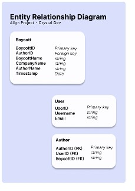
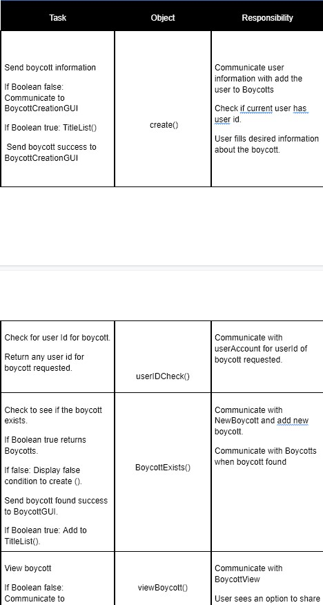
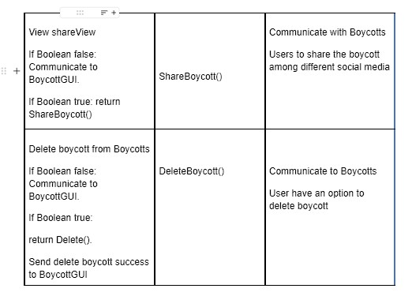
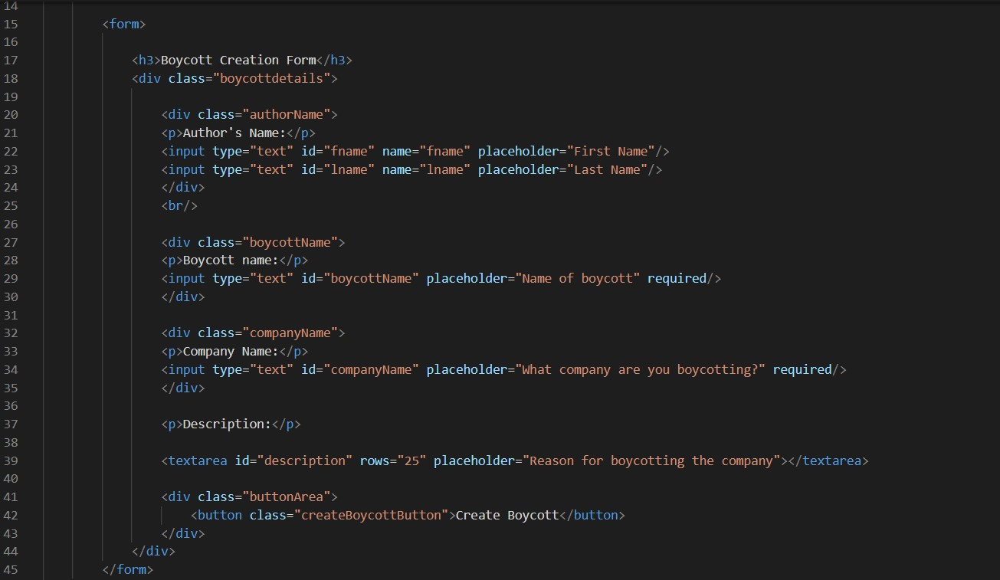

Summarize the problem
Something that would align what we would purchase for the belief of others was greatly needed. Our product is called Align. It ensures your money doesn't support organizations or companies that cause or contributes to contrary to your beliefs.
Align will notify you of products to avoid before adding to your shopping cart when online shopping. An Align user can browse our selection of curated boycotts put together by organizers of social movements, activists or political organizations and create their own boycotts to share with other users.
The Align application works as a web overlay which is used to provide contextual information on browsed products while online shopping.
This first iteration of the project will let a user create a profile, view boycotts, opt in to boycotts and create their own to share
For our future phases, we were planning to add more features that could be more impactful for our users by adding an upvote and downvoting option for certain boycotts. We want our users to have the best experience and align their needs.
Our Solution
Here are the current results of our team's effort.






These are our diagrams on what we were planning for the boycott app. We would create an app for those who want to create a movement and protest and for others to notified their protests.
Our team was considering our platform to be accessible on multiple devices like laptop and mobile to allow as much people as possible to be able to access our app.
We planned out our project by communicating each other through discord.
What it felt like to experience what we did was interesting. In my view, this is one of the longest projects that I did with a team.
Managing the project with others wasn't too bad because we assigned each other and distributed our work rather well.
We would check with each other if we had any questions or ideas about what task we're working on and see if it would be approved or could do some adjustments.
When our team was continuing to fill out our documentation, I was the one who did a large readjustment for the list of steps where it's in line with the test plan and nothing is out of the ordinary. It took me a while to format, type, and think of the portion that's needed to be adjusted.
Afterwards, it felt much more easier to do other things that's apart of our documentation and felt more relieved that we have a more clear documentation for it
What I wanted to do for my part is to make the code simple because I had to create a form. A form shouldn't have a large amount of colors and making the user have a troubling time trying to fill details out.
Another thing is that I'm also contributing to the User Stories that we had. It was specifically the one about creating boycotts that has not been mentioned. Something that I feel accomplished of is how the form looks and using the colors that we had planned to use for our main webpage.

We had some minor modifications for the form. We had removed the author's names because they're already logged in which makes adding their name somewhat pointless.
If I didn't have others check on my work, there would probably be some things that would be repetitive to have on the form.
My Contributions
What I have contributed in the project was the boycott creation forms project. I also checked my other member's code if it was well commented and checked if there was slight problems to the interface. If there was no commented code I would give them a reminder that they need to comment their code.
Some things that I have contributed outside of doing coding is that I did a good amount on the planning process and readjustments for our project and checked in on my team members. Some examples of my contribution is to clean up our SRS by readjusting our list of steps, readjusting test plan and checked if there was something inconsistent that needed to be changed.
My experience
From this experience I learned how to plan out a project and later plan out a project with my team members. It was interesting to see how me and my team would work things out and how we distribute work to each other.
I thought of what this experience will mean to be and how this was a step to the right path of my long journey to my career so I had mixed feeling of excitement and nervousness. However, I know that this experience will help me with what it would be like to work in a team environment and possibly how projects will be laid out.
The strengths that I learned from the experience is that I got to strengthen my skills at git and github because I still think that I'm new to github and I got to learn about branches. I got to learn more about virtual machines and displaying a website through a virtual machine.
I'm confident that my career will involve to learn these subjects and have at least some experience.
Some humbling moments from this was that I felt like I wasn't contributing as much to the team compared to other people because I saw that some of their code was amazing and that some of the code are things that I have little to no understanding about and feel inexperienced compared to others.
This experience is a common phenomenon called Imposter Symdrome and is experienced by many others in the industry.
How I broke through this is to not be afraid to ask on something you don't know. I would ask my team members about things I had no ideas about. Even though I felt like I didn't contribute as much for a certain week, I knew that I had some large contributions in the other weeks and I shouldn't undervalue myself just because I felt like I didn't do too well for only one week.
I needed to remember that it's alright to think that I'm inexperienced because I'm still starting out. I know that everybody starts off somewhere and this is where I started off trying to learn about things.
My advice to others who're pursuing the same path as me
Pointers that I would give to someone is to never be afraid to ask someone a question. It's ok to not know something because we've all started at one point and not know what we're doing.
If you're asking questions, others won't see down upon you and they're likely more than happy to help you. Another tip that I would give is to keep track on what you do by having a journal of some sort.
You may think that it would be easy to remember, but it's actually very difficult to try and remember those things later on especially if you don't use them for a period of time.
Finally my last pointer that I would give to someone is to not feel discouraged by other's skills and abilities. It takes time to learn about things like programming. You will eventually develop the skills on your own and get better each time you practice it.